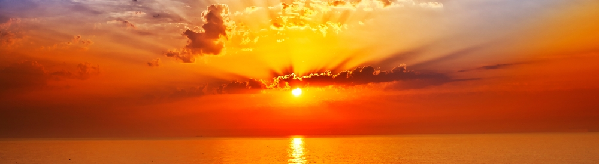
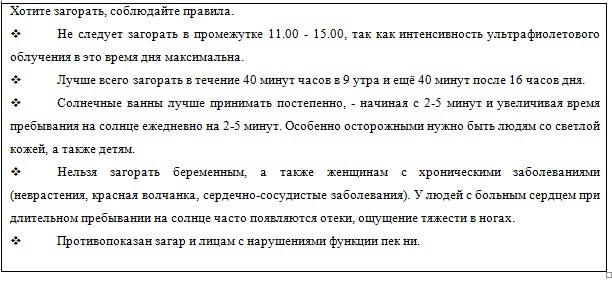

Реферат на тему "Солнце"
Содержание
Солнце — друг и враг
Поговорим о загаре. Загар — это реакция кожи на воздействие солнца. И для кожи загар — настоящий стресс.
Вместе с чудным бронзовым оттенком он несет в себе много опасностей: пересушивание и обезвоживание кожи, ожог,
аллid="anchort"ергию, гиперпигментацию и много других неприятностей.
Под воздействием солнечных ультрафиолетовых лучей наша кожа в течение некоторого времени приобретает темный
оттенок. Под воздействием этих лучей в клетках кожи активно производятся гранулы меланина (они же меланосомы).
Именно меланосомы в результате клеточного обмена, поднимаясь все выше и выше, придают нашей коже бронзовый
оттенок загара.Если мы продолжаем загорать, процесс идет дальше: клетки, находящиеся в самых верхних слоях кожи,
постоянно подпитываются свежими гранулами меланина и берут на себя роль «ширмы», задача которой - защищать кожу
от агрессивного солнца. Верхний роговой слой кожи утолщается, меланосомы начинают производить пигментные гранулы
с удвоенной скоростью. Это означает, что мы получаем возможность приобрести отличный стойкий загар. Процесс
продолжается до тех пор, пока не приблизится к индивидуальной границе загара (у каждого она своя, а потому
«темнее» уже стать невозможно). Итак, у кожи есть очень умная система защиты от вредных солнечных лучей. Для ее
запуска, предусмотренного природой, требуется время и строгое соблюдение дозировок ультрафиолета. Это значит,
что надо загорать очень осторожно, по 15-40 минут в день и только в часы восхода и заката. Но кто же выдерживает
такую дисциплину? Как правило, люди предпочитают отдаться солнцу сразу и целиком, с утра и до обеда. Это и
приводит к тому, что защитный механизм организма «ломается», так и не успев включиться.
Истина проста — нельзя злоупотреблять загаром. А для этого необходимо использовать все разнообразие средств
защиты «от солнца: солнцезащитные кремы и лосьоны, шляпы, темные очки и, конечно же, дозировать время пребывания
на солнце.
Вернуться к началу
Теория, которую надо знать.
Теория, которую надо знать. По типу кожи все люди делятся на пять категорий:
- Первый — альбиносы, кожа у которых очень светлая. Загар людям с таким типом кожи противопоказан,
солнечные лучи способны только вызвать у них ожог.
- Второй — светлокожие блондины. Они могут добиться едва заметного потемнения кожи, если сумеют рассчитать
пребывание на солнце по минутам. Но чаще всего их попытки загореть приводят лишь к ярко-красной окраске
- Третий тип —люди со смуглой кожей и темным цветом волос. Они загорают быстро и легко и могут себе
позволить понежиться под солнышком без вреда для здоровья (при отсутствии противопоказаний и условии
соблюдения рекомендаций).
- Четвертый и пятый — мулаты и представители негроидной расы соответственно. Им, как несложно догадаться,
ультрафиолетовое облучение не способно нанести вреда. Их кожа надежно защищена от солнечных лучей самой
природой.
Но даже тем, кто легко загорает, необходимо помнить: ультрафиолетовое облучение может нанести непоправимый вред
здоровью человека с любым типом кожи, если у этого человека есть к тому предпосылки. Многочасовые солнечные
ванны могут вызвать серьезные ожоги и солнечные удары, однако, это не самые страшные последствия неумеренного
загара. Гораздо более серьезный и необратимый эффект от ультрафиолетового облучения может возникнуть спустя
какое-то время, иногда через годы. Дерматологам все чаще приходится сталкиваться с так называемыми отложенными
последствиями неумеренного пребывания под прямыми солнечными лучами. Это злокачественные образования и ярко
выраженные пигментные пятна, ранние морщины, нарушения работы щитовидной железы и др.
Вернуться к началу
Борьба с ультрафиолетом
История солнцезащитных препаратов (СЗП) началась с поиска средства для защиты от солнечных ожогов солдат США
во время боевых действий в Африке в ходе Второй мировой войны. Существует много требований к вновь создаваемым
препаратам с учетом их эффективности и безопасности для потребителя. Однако процессом их создания движет не
только наука, но и экономические интересы глобальной индустрии, имеющей огромные прибыли от торговли этой
продукцией. Потребителю не просто разобраться в солнцезащитных средствах, так как один и тот же UV-фильтр имеет
не только химическое название, но и ряд торговых наименований.
Даже фактор солнечной защиты (sun protection factor — SPF), обозначенный на этикетке, может внести путаницу. SPF
— это отношение МЭД защищенной UV-фильтром кожи к МЭД незащищенной кожи . Так как повреждающее действие UVA не
связано с эритемой, SPF не дает никакой информации о том, насколько хорошо данное солнцезащитное средство
защищает кожу от этого типа излучения (длинноволнового UV). Кроме того, эффективность защиты зависит от толщины
слоя солнцезащитного средства на коже, от скорости смывания этого средства потом и водой и от типа кожи.
Вернуться к началу
Коварство солнечных лучей
Ласковые солнечные лучи на самом деле очень коварны. Они могут привести к так называемому фотостарению
(непривычная к жаркому климату кожа начинает очень быстро покрываться пигментными пятнами и морщинами). Но этих
проблем можно легко избежать, если запастись специализированной пляжной косметикой.
Самая надежная защита от вредных лучей — крем-фильтр для загара. Выбирая подходящий флакон, нужно в первую
очередь искать отметку UVA — UVB. Эти буквы означают, что крем защищает от ультрафиолетовых лучей всех типов (А
и В). Степень защиты (ее называют «фактором») обозначается цифрой.
В тропическом климате первые два-три дня нужно применять средства с солнцезащитным фактором 30 или 40, а для
светлой кожи в некоторых случаях даже выше, до 60. Затем следует перейти на более легкую защиту с фактором
10—15. Сэкономить «на факторах», купив один флакон вместо нескольких, не удастся, три слоя с фактором 10 не
дадут эффекта на 30.
Если на косметическом средстве стоят буквы «UV», но нет цифры, обозначающей степень защиты от солнца, значит,
средство предназначено для жителей средней полосы России, проводящих мало времени на открытом солнце.
Число, указанное на флаконе, показывает, во сколько раз крем увеличивает время безопасного пребывания на солнце.
Безопасным пребыванием считается время, пока кожа не начинает краснеть. В зависимости от типа кожи оно может
составлять от 7 до 40 минут.
Защитный состав начинает действовать не сразу. Чтобы избежать ожога, следует наносить крем на кожу за 20—30
минут до выхода на пляж. Учтите, если вы нанесли крем повторно, это не значит, что вы дополнительно увеличили
время безопасного пребывания на солнце. Вы просто восстановили защитный слой.
Кстати, выбирая крем, необходимо обратить особое внимание «а страну-производителя. Дело в том, что существуют
разные методики определения солнцезащитного фактора: европейская (ДИН), американская и австралийская. Покупая
американский крем с защитой в 16 единиц, необходимо понимать, что средство европейского производства с таким же
коэффициентом имеет уже совершенно другие степени защиты. Поэтому сначала поинтересуйтесь у продавца, какова
цифра самой высокой степени защиты у той фирмы, крем которой вы собираетесь приобрести. (Многие фирмы склонны
завышать SPF на этикетке, поэтому при выборе крема для загара делайте пятипроцентную скидку на желание
производителя «выглядеть лучше» перед потребителем.)
Вернуться к началу
А теперь о грустном
«Солнцезащитные кремы защищают кожу только от ожога, — говорит онкодерматолог Онкологического научного центра
РАМН Валерий Мусатов. — Но ни один из них не защищает ее от спровоцированного солнцем возникновения рака кожи.
Тем временем во многих странах наблюдается, можно сказать, «эпидемия» этой болезни. Израиль за последнее время,
вышел на второе место (после Австралии) — заболевают переселенцы из Европы, не привыкшие к палящему солнцу
пустыни. Массированная реклама солнцезащитных кремов приводит к тому, что у многих возникает ложное чувство
безопасности перед солнцем. Намазался и, будучи под защитой, лежишь спокойно часами».
Его мнение разделяют и другие специалисты. Заведующая лабораторией по экспертизе косметических средств Центра
косметологической коррекции Центральной клинической больницы Людмила Гурочкина считает, что от меланомы (рака
кожи) косметика не спасет. По ее мнению, кремы действительно защищают, но лишь от ожога, который с раком кожи
практически не связан.
С похожими заявлениями еще в феврале 1998 года выступили американские медики, проанализировавшие результаты
нескольких крупных исследований. Это был удар для американских дерматологов, рекомендовавших своим клиентам
солнцезащитные кремы для предупреждения рака кожи.
Но загар может привести не только к меланоме, а и к другим видам рака, для профилактики которых солнцезащитные
кремы все же подходят. Тем более эффективны они для предупреждения ожогов.
Что ж, получается, лучше вовсе не загорать? Отнюдь. Врачи говорят, что принимать солнечные ванны можно, главное
— этим не увлекаться. Как показали исследования, у человека, который провел 10 минут на солнце, улучшается
циркуляция крови, вырабатывается витамин D, а этот витамин занимает особое положение среди жизненно важных
веществ. Основная функция витамина D в организме — обеспечение нормального роста и развития костей,
предупреждение рахита и остеопороза. Этот витамин не только препятствует размягчению костей, но воздействует на
общий обмен веществ. От него зависит восприимчивость организма к кожным заболеваниям, болезням сердца и раку.
Витамин D повышает иммунитет, необходим для нормальной работы щитовидной железы и нормальной свертываемости
крови, препятствует росту раковых клеток. Из-за слишком редкого пребывания под открытым небом и меньшего уровня
солнечного облучения жители северных стран часто страдают от нехватки витамина D. Его недостаток они могут
скомпенсировать только за счет дополнительного пребывания в естественном или искусственном солнечном свете. Как
видите, используя необходимую косметику и в разумных пределах находясь под солнцем, загорать можно и даже нужно

Вернуться к началу
Где жить хорошо
Журнал «Forbes» составил список самых «здоровых» стран мира по данным ВОЗ. Всемирного банка и ООН по критериям:
загрязнение воздуха в крупных городах; доступ населения к чистой питьевой воде и канализации; уровень
младенческой (до года) смертности; заболеваемость туберкулезом; число врачей на 1000 жителей; продолжительность
жизни. В итоге список 15 лидеров выглядит так:
- Исландия — высокие продолжительность жизни (72 года — мужчины, 74 — женщины) и «плотность» врачей (3,62
на тысячу человек), низкие уровни младенческой смертности (2 — на тысячу новорожденных) и заболеваемости
туберкулезом (2,2 — на 100 тыс. населения).
- Швеция — низкие значения младенческой смертности(3) и заболеваемости туберкулезом (4).
- Финляндия — низкие младенческая смертность (3) и заболеваемость туберкулезом (4,8).
- Германия — самые высокие расходы на здравоохранение (10,6% ВВП), низкая загрязненность воздуха
- Швейцария — высокие продолжительность жизни (71 год — мужчины, 75 — женщины) и «плотность» врачей
(3,61).
- Австралия — низкая загрязненность воздуха, но сравнительно высокая заболеваемость туберкулезом (5.9).
- Дания — приличная продолжительность жизни (59 лет -мужчины, 71 — женщины), но недостаточно высокая
«плотность» врачей (2,93).
- Канада — высокая продолжительность жизни, одна из самых низких заболеваемость туберкулезом (3,6).
- Австрия — низкая младенческая смертность (4) и высокая «плотность» врачей (3,38).
- Нидерланды — более высокие уровни загрязненности воздуха, воды и почвы, а также заболеваемости
туберкулезом (5,4).
- США — сравнительно низкий уровень загрязненности воздуха, один из самых низких в мире уровень
заболеваемости туберкулезом, низкая младенческая смертность и высокая продолжительность жизни.
- Израиль — высокая «плотность» врачей (3,37). Нормальная продолжительность жизни (70 лет — мужчины и 72
года — женщины), но уровень загрязненности воздуха оставляет желать лучшего
- Чехия — низкая младенческая смертность (3), но невысокая продолжительность жизни (66 лет — мужчины, 71
год — женщины) и высокая заболеваемость туберкулезом (10,8).
- Испания — удовлетворительные значения «плотности» врачей, продолжительности жизни и младенческой
смертности, но высока заболеваемость туберкулезом (21,7).
- Франция — высокая плотность врачей (3,37), низкий уровень загрязненности воздуха, но высока
заболеваемость туберкулезом (11).
Как легко догадаться, Россия в этом рейтинге — далеко позади.
Вернуться к началу